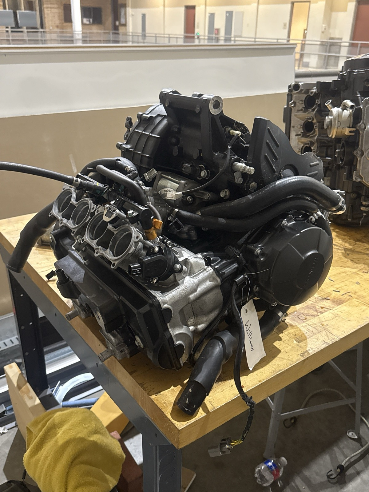
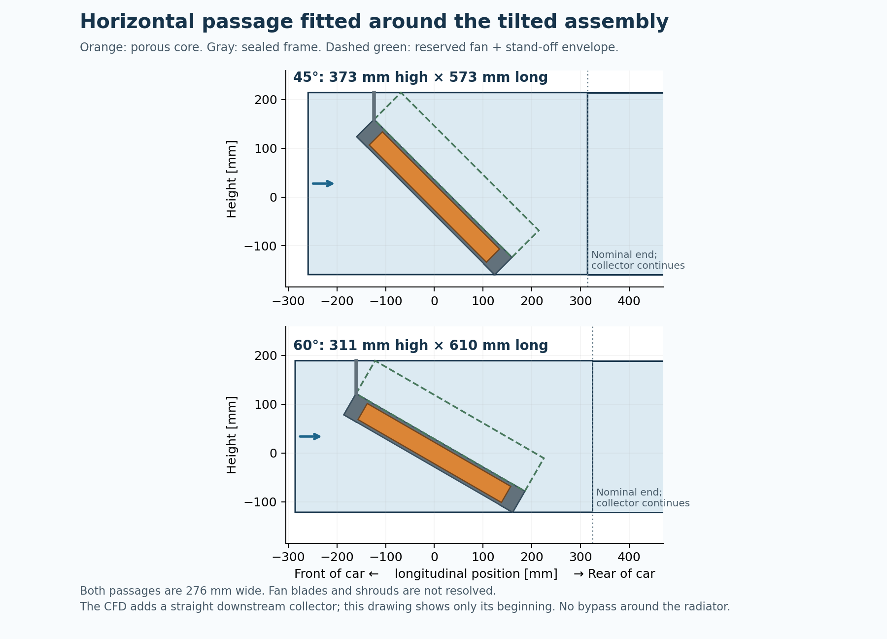
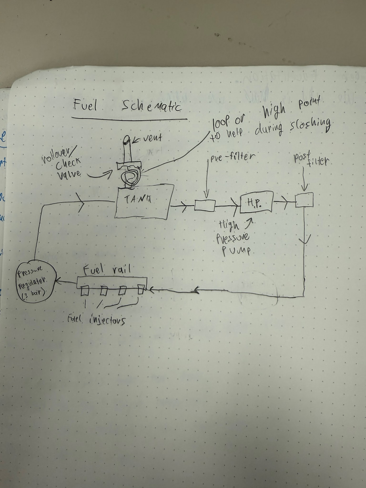

Powertrain Subteam Lead
Rice Racing — Formula SAE
I lead Rice Racing’s powertrain subteam as we develop our first Formula SAE car around a Honda CBR600RR engine. My work spans cooling calculations, fuel-system sizing, component selection, and fitting those systems into the car.


Cooling calculations
With no previous car data to size from, I worked through engine energy balances, estimated coolant heat loads, and comparable Formula SAE designs. I then used coolant flow, airflow, and inlet temperatures to examine the heat transfer required from the radiator.
The current sizing study uses a provisional 21.8 kW heat-rejection target. I evaluated how changes in core dimensions, coolant flow, and airflow affect predicted capacity, using a Python heat-exchanger model alongside ANSYS Fluent airflow studies.
This work showed why the radiator dimensions alone are not enough: the core, fans, and duct need to work together. The current package remains a design candidate, with supplier performance data and testing needed to establish its cooling capacity.
Fans, ducting & packaging
I compared single- and dual-puller fan arrangements using pressure–flow curves, estimated radiator resistance, and electrical current demand. This connects the fan choice to the airflow it can deliver through the installed system, including the shroud and outlet.
I’m also comparing 45° and 60° radiator layouts to reduce sidepod height while allowing space for the fans, hoses, and discharge airflow. Supplier discussions cover single-row core construction, overall tank dimensions, and manufacturability.


Fuel consumption & tank sizing
I’m evaluating how much usable fuel the car needs for endurance, balancing capacity, weight, and packaging. The work includes preliminary Realis WAVE engine simulations at different engine speeds and throttle openings, incorporating the team’s intake and exhaust dimensions.
I used those fuel-flow results to compare driving-load scenarios and allowances for starting, idling, reserve fuel, and fuel the pickup cannot reach. The driving-time assumptions still need validation; the simulations help assess tank-size choices but do not yet establish a measured endurance requirement.
Fuel delivery & integration
The fuel-system work also covers pump and regulator selection, filtration, rail connections, and hose routing. I’m evaluating a HydraMat pickup with a tank footprint constrained by the pickup, making tank height an important capacity decision.
I’ve worked through the distinction between internal tank volume, fuel at the competition fill level, and fuel that remains usable during driving. Reviewing the team’s schematics, parts lists, and engine inputs has also helped identify details that need to agree before fabrication, including the pump assembly and injector configuration.

